flowchart LR calibrate["`Apply **sensor calibration** and **reflectance panels**`"] calibrate --> adjust["`Adjust for illumination differences (sun angle, clouds)`"] adjust --> correct["`Correct vignetting and shadow effects`"]
GIS 584: UAS Mapping & Analysis
Detecting and quantifying changes using multi-temporal UAS data
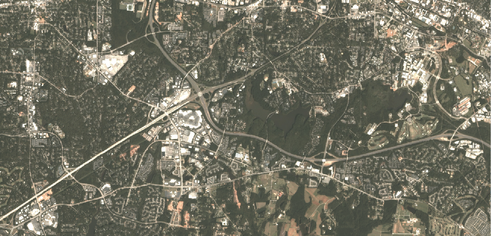
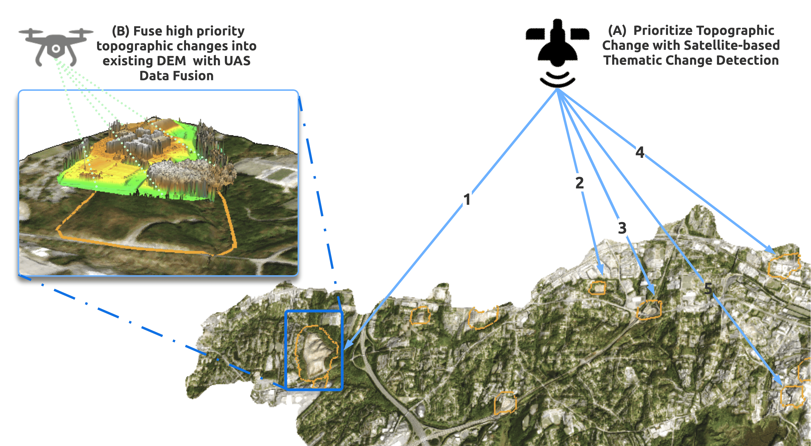
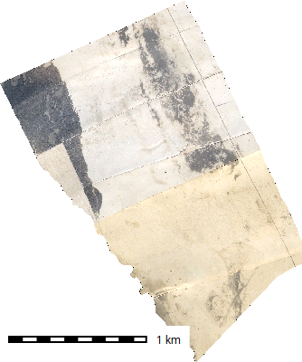
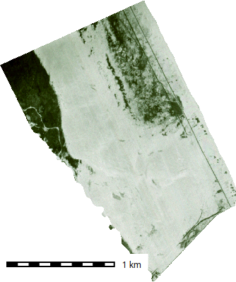
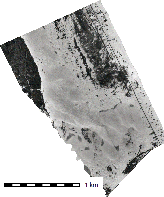
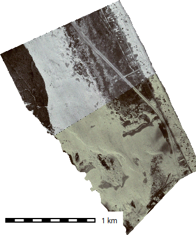
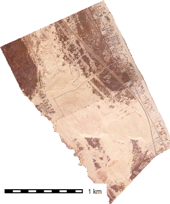
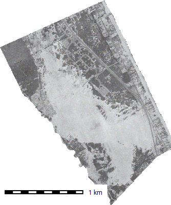
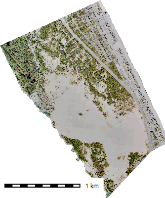
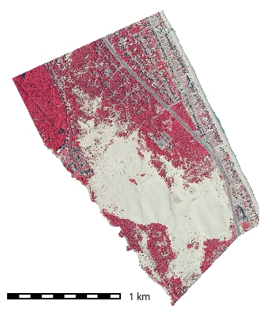
Normalizes brightness and spectral values across flights
flowchart LR calibrate["`Apply **sensor calibration** and **reflectance panels**`"] calibrate --> adjust["`Adjust for illumination differences (sun angle, clouds)`"] adjust --> correct["`Correct vignetting and shadow effects`"]
Enables meaningful spectral differencing and vegetation indices
Addidional Resources (Sampath et al. (2023))
Ensures all datasets share the same coordinate reference and alignment
Divide imagery into homogeneous regions
Derive attributes per object:
Compare across dates by
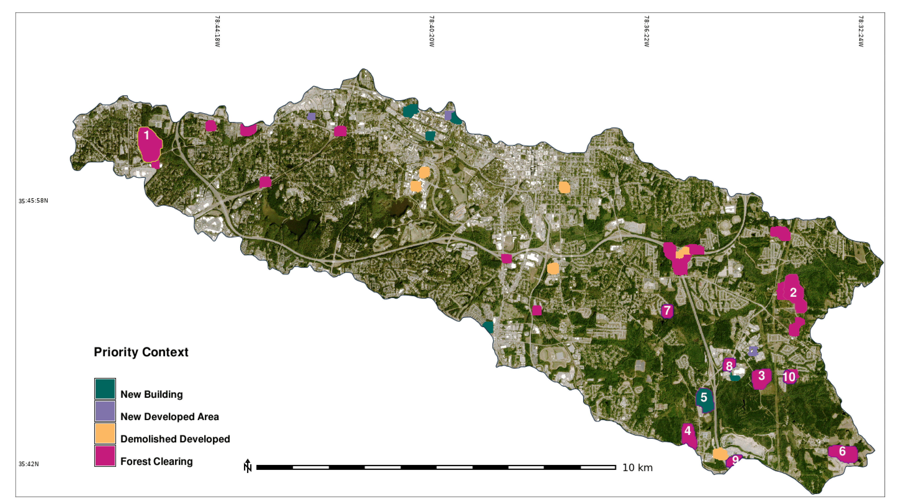
Enables context-aware change analysis
| Class (t1→t2) | Vegetation | Bare Soil | Built-up |
|---|---|---|---|
| Vegetation | 80% | 15% | 5% |
| Bare Soil | 10% | 85% | 5% |
| Built-up | 5% | 5% | 90% |